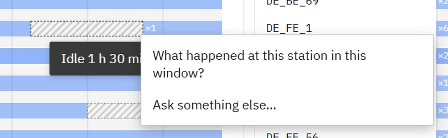
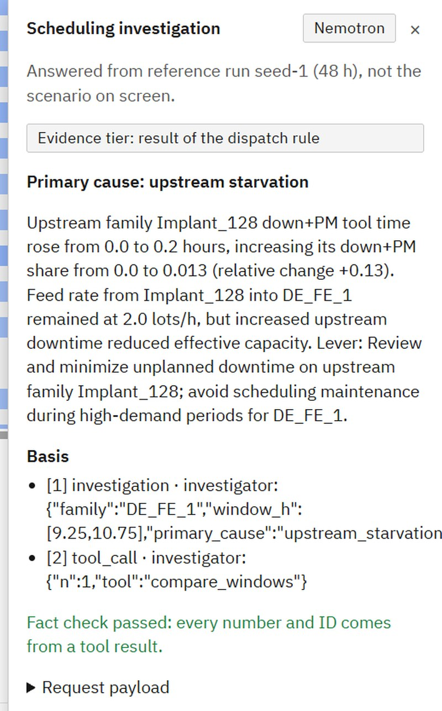

Right-click any bar or gap on the Gantt and ask why. The answer comes from the decision record, with an honesty tier set by code, and it never changes the plan. Q-time is a hard constraint. Nemotron runs on Meterless Nightshift, and the fab data comes through Zetaris.
README.md · docs/SMT2020_PROVENANCE.md · 99.26%: docs/HARD_QTIME.md (seeds 1–3, 7 d)
1,313 tools, 2,156 lots and 264 Q-time limits. A tool sits idle next to a full queue, and nobody on shift can see why.
The lead starts the waiting lot by hand. The idle time was often the Q-time gate keeping a downstream window from being missed.
The lot misses its CQT window (1–24 h) at the next step. A missed wet-etch window sends it back for a re-clean.
docs/QTIME_URGENT.md · +19: docs/gap_counterfactual/seed1_48h.md (seed 1, 48 h, simulated)
docs/ARCHITECTURE_LAYERS.md · 15 invariants: docs/invariants.md · 0 calls: study_zero_call/zero_call.md


Bar → why here, why this tool, why now · Gap on a tool → why idle · Family window → what happened, why WIP changed · Free question.
Tier, set by code:
decision_record a recorded gate or dispatch decision explains it
rule_emergent only "the result of rule X in that state"
unknown the record does not say, so we say so
qtime_gate: the lot was held because its Q-time segment could not finish in time downstream.
batch_wait: the furnace waited to fill a batch.
pm_avoidance: recorded too, but never filled. Moving a PM is a different intervention.
| reason | gaps | protective | not | inconclusive |
|---|---|---|---|---|
| qtime_gate | 6,822 | 529 | 5,519 | 774 |
| batch_wait | 42 | 17 | 25 | 0 |
12 h run: 3,155 gaps, +3 avoidable violations (0 → 3), 21 protective.
Limits: all gaps are filled at once and the fills interact, so the per-gap share is an estimate. The violation delta is the hard number.
docs/gap_counterfactual/seed1_48h.md, seed1_12h.md (seed 1, simulated, no LLM)
| Seeds 1–3 · 7 d | Hard Q-time gate (default) | Gating off | EDD (infeasible) |
|---|---|---|---|
| True Q-time compliance | 99.26% | — | — |
| Avoidable Q-time misses (3 seeds) | 71 (334 at the earliest gate) | 849 | 1,719 |
| Unavoidable Q-time misses (3 seeds) | 105 | — | 1,426 |
| Completed lots / run | 486.7 | 503.7 | 520.0 |
| On-time | 82.1% | 92.0% | 92.0% |
| Weighted tardiness / run | 44,008 min | — | 21,046 min |
docs/HARD_QTIME.md (PR #46, published book, 3-seed totals) · no weight, due or seed was tuned
Expedited, never excluded: 564 lots made hot at their first Q-time miss, 519 recovered within 7 d. Mean recovery 1,396 min (p90 3,143).
71 avoidable misses, mostly at chained Q-time windows of the batch diffusion furnaces.
Every miss carries a class in the study output (qtime_miss_class): avoidable, breakdown after admission, pre-gate window, tool down / PM, transport, rework.
So the AI can say which kind of miss a lot had, from the record. It does not invent a better schedule.
docs/HARD_QTIME.md (PR #46, published book, seeds 1–3, 7 d)
| Extractor | Precision | Recall | Hard recall |
|---|---|---|---|
| Regex baseline | 0.973 | 0.750 | 0.000 |
| LLM pipeline · scripted stand-in | 1.000 | 1.000 | 1.000 |
| LLM pipeline · live Nemotron | 0.957 | 0.938 | 0.833 |
A/B/C on a mock ledger. Gap closure on avoidable Q-time: scripted stand-in (written against these notes) B 1.0 with 0 collateral; regex B 0.7069 with 1 collateral event.
Live, Nemotron through Nightshift. Avoidable Q-time A 17 → B 14 = C 14: gap closure 1.0. 1 wrong event applied, 0 new violations.
46 notes (EN 31 / 中文 8 / 日本語 7), 48 gold events, 3 zero-event traps. 13 notes are hard for regex: spelled-out numbers, 2h45m, fractions, pronouns, relative times ("今晚十点").
data/notes/README.md · scripts/score_notes.py · scripts/compare_notes_ab.py · results_pc/notes_ab_live.json
Published book: 58 exceptions, 0 escalations, every KPI identical to rules only. Generated stress set: 0/16 triggered (60–84 exceptions each).
Settings: seed 9, 5–6 h horizon, fork 1 h × 2 futures. The shipped default fork is 8 h × 3 futures.
K = 1–15 × 3 search seeds: identical outcomes (avoidable 0, hot late 0, wt 3,323.7). Sim calls 222.7 → 1,106. Non-LLM.
Limitation: the rule plan already had 0 avoidable misses on this 5 h window. A flat curve can also mean the lever set is too weak or the search too blind.
These run only with SHIFT_LEAD_ESCALATE=always: 16/16 stress books trigger, with 35–49 escalations each. The threshold was not changed to make it fire.
Exploratory. They are not a claim that the LLM schedules better.
study_zero_call · study_stress_gen · study_stress_gen_always · study_search_curve (heldout_published, seed 9)
Mean over futures. One sampled future can be unlucky. The mean reacts to a problem the rule plan causes on average, not to one bad draw of breakdowns.
Pre-registered, not retuned. ≥ 1.0 avoidable Q-time miss or ≥ 1.0 late hot/VIP lot. Fixed before the studies and kept at the code freeze, though it never fired.
Shipped vs study. Shipped fork: 8 h × 3 futures. The 0/58 and 0/16 runs used 1 h × 2 futures. B/C used always: exploratory.
resilimes/agents/sim_select.py (GATE_QAVOID_MIN = GATE_HOT_LATE_MIN = 1.0) · study_zero_call · study_stress_gen
| Agent | Rule baseline | Nemotron (live) | Note |
|---|---|---|---|
| Investigator, no protocol · top-1, 24 cases | 20/24 | 11/24 | Prompt without a decision protocol. |
| Investigator, with protocol · top-1, 24 fault cases | 20/24 | 20/24 equal | Top-2 21/24 · fact-check 24/24 (4 auto-repaired) · 0 no-answers · 1.54 calls |
| Shift handover · 12 items | — | 12/12 | Fact-check 12/12 (2 auto-repaired) · recall 1.0 · 8.2 min mean |
| Late-lot explainer · cause, 12 lots | exact split | 11/12 | Fact-check 12/12 |
| Late-lot explainer · lever, re-simulated | — | 1/12 hit | 4/12 helped at all · mean −9.1 min · worst: 69 min claimed, 301 min worse |
| Investigator hard cases · 17 (13 injected + 4 notes) | 8/17 · top-2 16/17 | 4/17 · top-2 7/17 | Fact-check 11/17 · 6 flagged degraded (3 timeouts) · misleading and unseen faults 0/8 |
docs/AI_INVESTIGATOR.md · docs/AI_HANDOVER.md · docs/AI_EXPLAINER.md
0 calls: study_zero_call · +19: docs/gap_counterfactual/seed1_48h.md · regex: scripts/score_notes.py · docs/AI_*.md
Advice only. Every AI reply carries advice_only: true. Deliberation roles (plan horizon, current shift, floor) see only their own evidence; conflicts are recorded, never averaged.
Checked. The code assigns the tier; an upgrade is refused. Evidence SQL: one SELECT, allowlisted tables, LIMIT enforced. Every lever is re-simulated before it is shown as a saving.
Bounded. 90 s per model call, 180 s per task. No token: "offline stand-in" badge. Tokens come from the env and are never logged.
90 s / 180 s: docs/AI_INVESTIGATOR.md · resilimes/insight/deliberation.py
nvidia/nemotron-3.5-lightning-30b-a3b
http://127.0.0.1:8088/v1
docs/SPONSOR_TECH.md · docs/ZETARIS.md · docs/H_MEM.md
docs/DEMO_VIDEO_SCRIPT.md · docs/SPONSOR_TECH.md
Python. Scheduler, SMT2020 simulator, hard Q-time gate, console, studies.
AI / LLM. Agents, evidence toolkit, fact-check and tier rules, Nightshift integration.
That override rate is the metric we want to move. It is not measured yet.
Team Takae · github.com/Toygaolingxiao/ResiliMES-AI